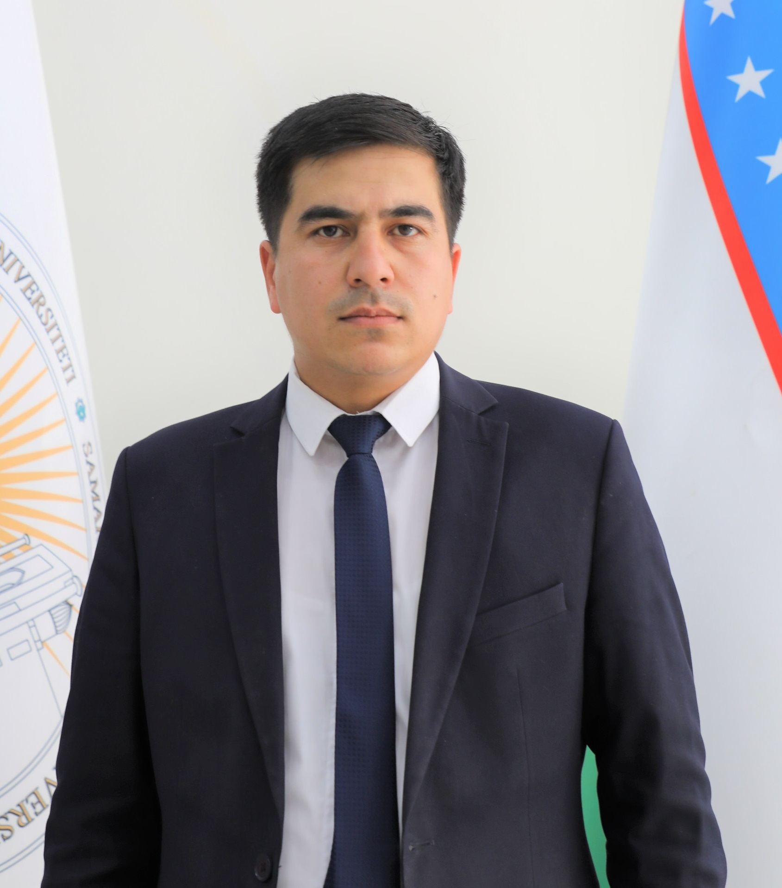
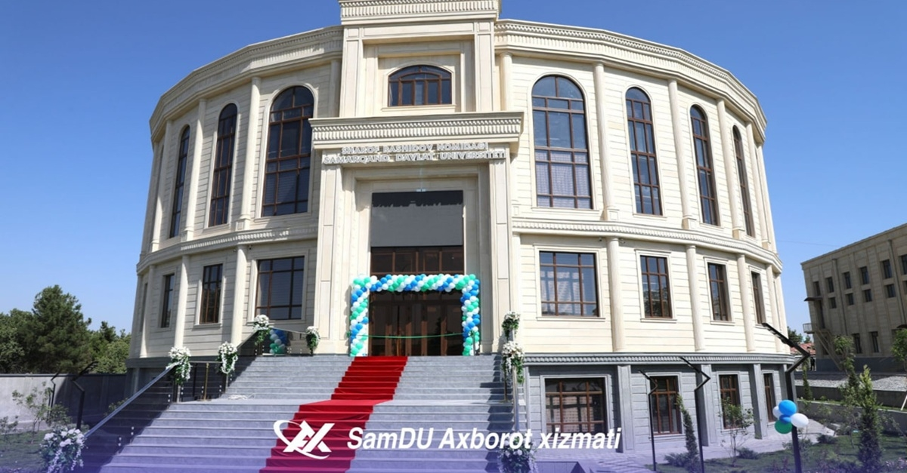
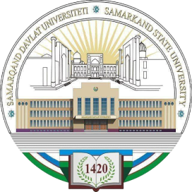

instagram
instagram
 yutube
yutube

Sun’iy intellekt va raqamli texnologiyalar fakulteti ilm-fan, innovatsiya va ta’limning uzviy uyg‘unligini ta’minlash asosida yuqori malakali, raqobatbardosh mutaxassislar tayyorlashga yo‘naltirilgan zamonaviy ta’lim maskani hisoblanadi. Fakultet 2025-yilda Intellektual tizimlar va kompyuter texnologiyalari fakulteti negizida zamonaviy raqamli sohalar ehtiyojlaridan kelib chiqib qayta tashkil etilgan bo‘lib, uning shakllanish tarixi 1972-yilda faoliyat boshlagan Amaliy matematika fakultetiga borib taqaladi. Bugungi kunga qadar fakultet 2000 nafardan ortiq bitiruvchilarni yetishtirgan bo‘lib, ularning 1700 nafardan ziyodi respublika xalq xo‘jaligining turli sohalarida samarali faoliyat yuritib kelmoqda. Bitiruvchilar orasida 20 nafar fan doktori (DSc) hamda 50 nafarga yaqin falsafa doktori (PhD) ilmiy darajasiga ega yetuk mutaxassislar mavjud. Hozirgi kunda fakultetda 5 ta bakalavriat, 6 ta magistratura va 4 ta doktorantura mutaxassisligi bo‘yicha kadrlar tayyorlanmoqda.

Fakultet tarkibida 4 ta kafedra faoliyat “Sun’iy intellekt va axbrot tizimlari”, “Matematik modellashtirish”, “Boshqaruv nazariyasi va axborot xavfsizligi” hamda “Dasturiy injiniring”. Ushbu kafedralarda 8 nafar professor, 25 nafar dotsent, 2 nafar katta o‘qituvchi va 20 nafar assistent faoliyat olib bormoqda.
Ta’lim jarayonini zamonaviy talablar asosida tashkil etish maqsadida fakultetda Sun’iy intellekt, Kiberxavfsizlik, Matematik modellashtirish va Robototexnika yo‘nalishlari bo‘yicha 4 ta zamonaviy ilmiy-amaliy laboratoriya faoliyat yuritadi. Shuningdek, fakultet huzuridagi IT-Innovatsion markaz hamda “SamIT” xususiy korxonasi orqali talabalar va yosh tadqiqotchilarning startap loyihalari qo‘llab-quvvatlanadi.
Fakultetda “Axborot xavfsizligi”, “Sun’iy intellekt”, “Dasturiy ta’minot yaratish” hamda “Matematik modellashtirish” yo‘nalishlari bo‘yicha ilmiy maktablar faoliyat yuritib, ularning shakllanishi va rivojlanishida professor I.I. Jumanov professor B.X. Xujayorov, professor M.X. Lutfullayev hamda professor A.R. Axatovlarning xizmatlari alohida e’tirof etiladi. Ilmiy tadqiqotlar natijasida 50 dan ortiq dasturiy mahsulotlar yaratilgan va amaliyotga joriy etilgan.
Fakultet hududiy va respublika miqyosidagi ta’lim muassasalari, korxona va tashkilotlar bilan hamkorlikda ilmiy tadqiqotlar natijalarini amaliyot hamda ishlab chiqarish jarayonlariga tatbiq etish orqali zamonaviy bilim va ko‘nikmalarga ega mutaxassislar tayyorlab kelmoqda.

instagram
yutube